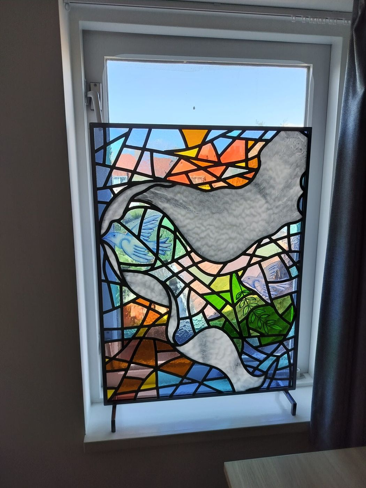
Glas in lood op maat
Een eigen ontwerp voor je nieuwbouw of jaren '30 woning. Van schets tot een raam dat niemand anders heeft.
Ontwerp op maatMeer info
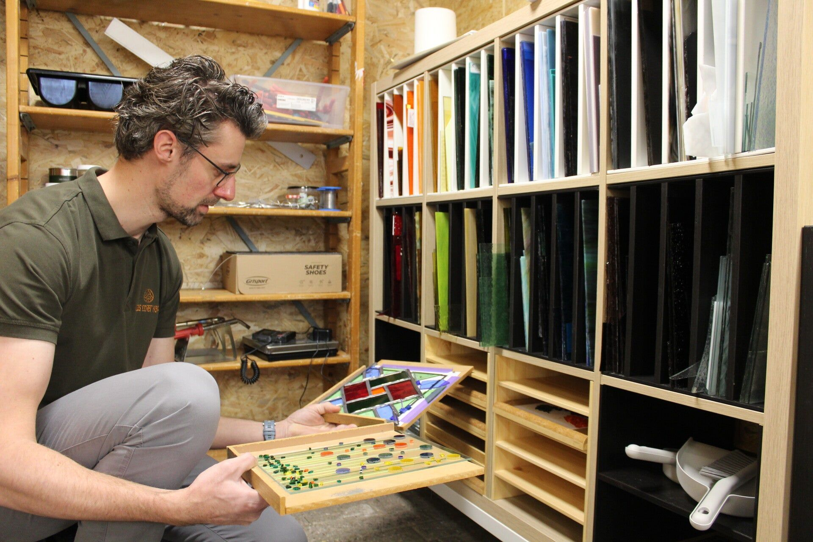
Ramen op maat, restauratie en workshops in ons eigen atelier. Voor particulieren in Etten-Leur, Breda, Roosendaal en de dorpen eromheen.
Van een nieuw raam voor je jaren '30 woning tot het herstel van een oud paneel. Of je maakt het zelf, in ons atelier.

Een eigen ontwerp voor je nieuwbouw of jaren '30 woning. Van schets tot een raam dat niemand anders heeft.
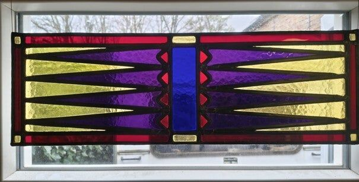
Gebroken ruitjes, versleten lood of een paneel dat doorhangt: we herstellen het in klassiek lood.
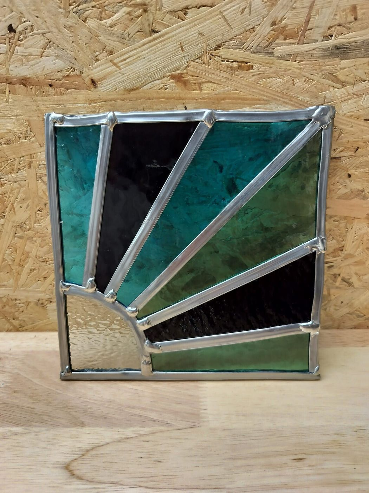
Glas in lood of glasfusing, in kleine groepen. Je gaat naar huis met je eigen werkstuk.
Geen knutselmiddag, maar echt glas, echt lood en de technieken die al eeuwen worden gebruikt. Je werkt in een groep van maximaal 8 personen, met koffie, thee en iets lekkers. Materialen en gereedschap zijn inbegrepen.
Ook cursusavonden op maandag en woensdag, en privéworkshops of bedrijfsuitjes voor je eigen groep.
Alle data, cursussen en groepen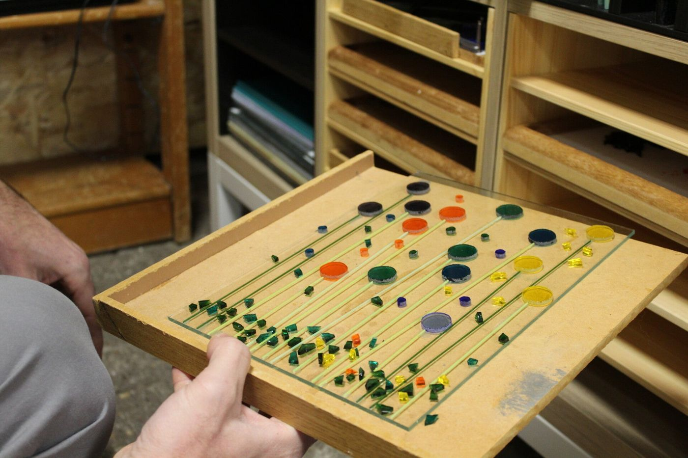
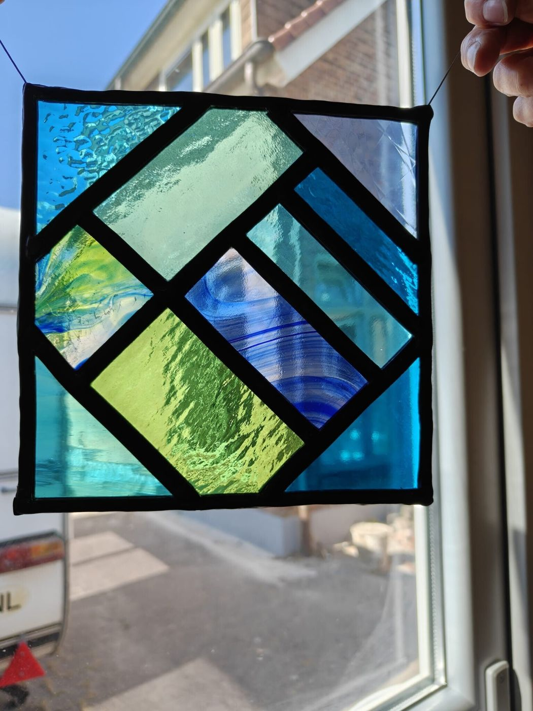
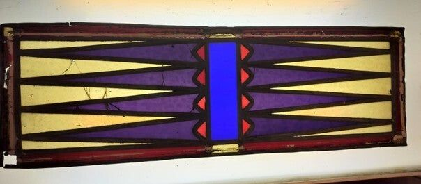
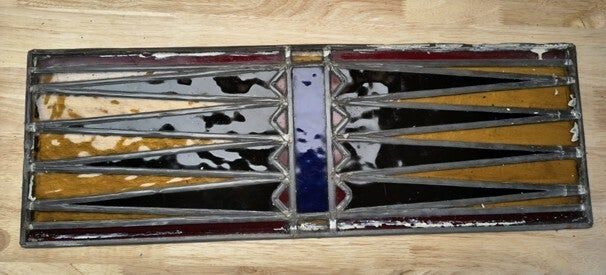
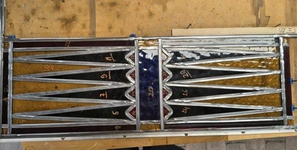
Rammelt het raam, hangt het paneel door of zit er een barst in het glas? We behouden zoveel mogelijk origineel glas en zetten het opnieuw in lood van dezelfde breedte en stijl.
Van kleurrijke ramen in jaren '30 woningen tot moderne panelen met strakke lijnen. Elk stuk maken we één keer.
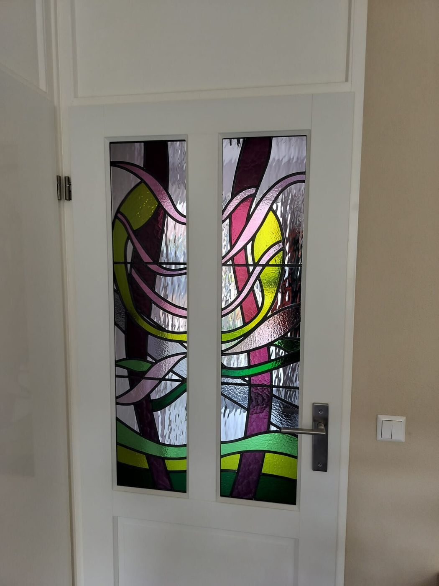
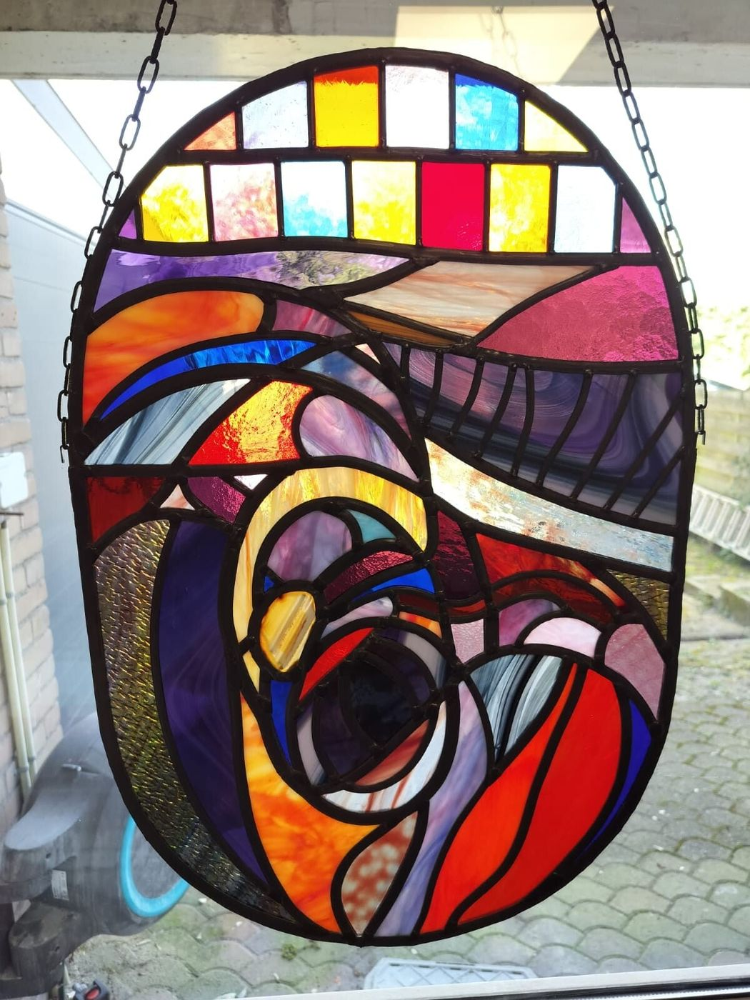
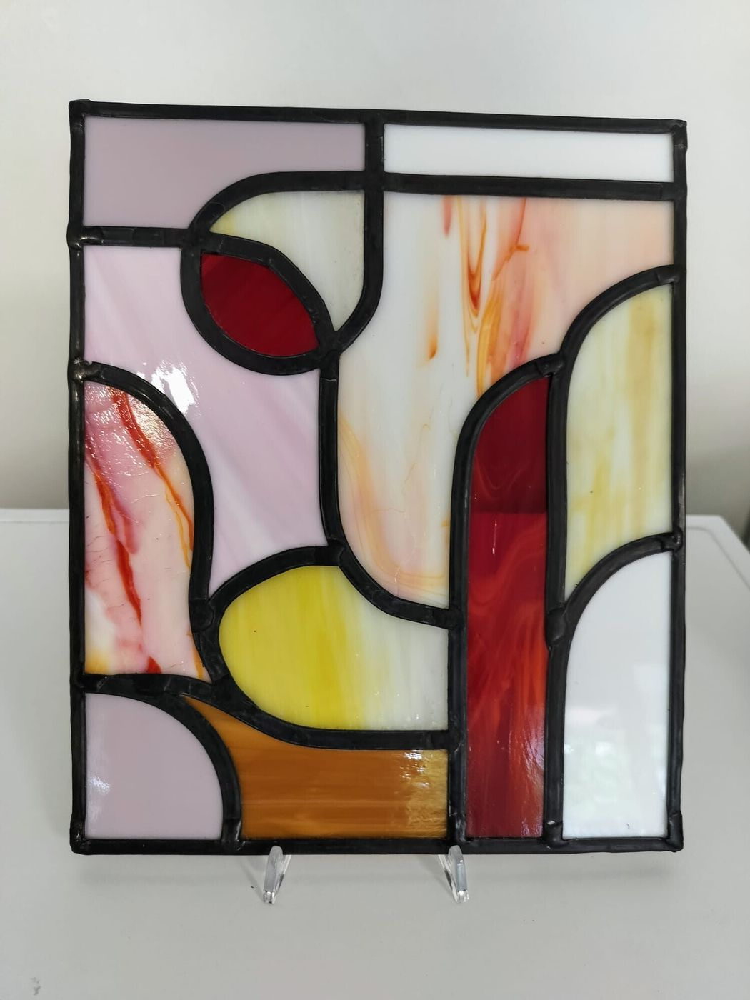
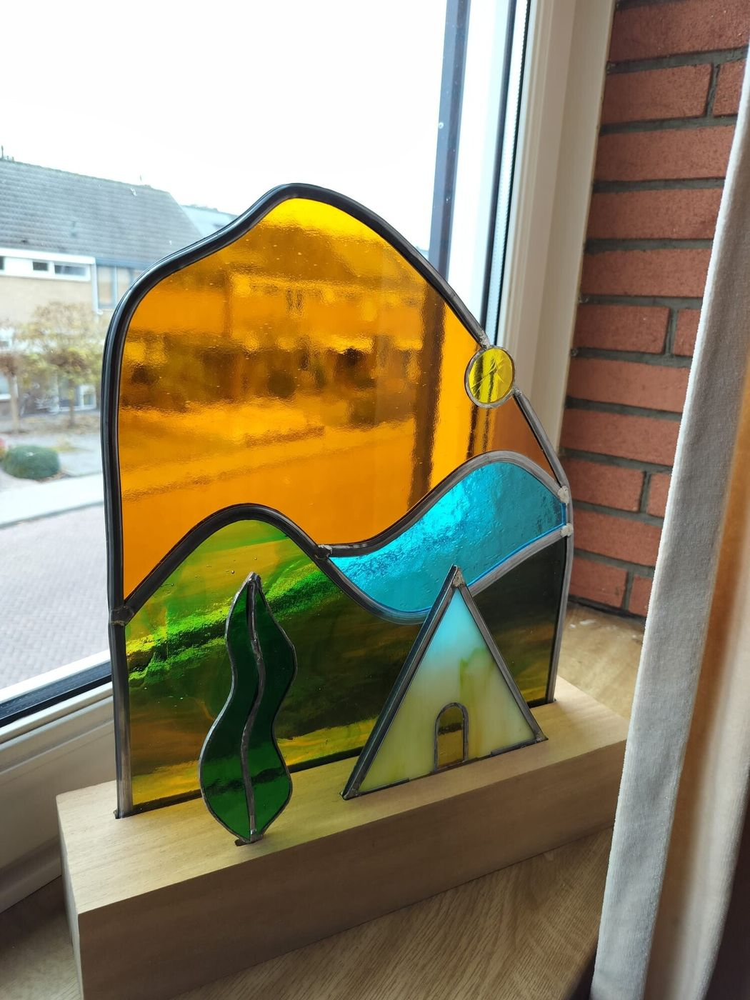
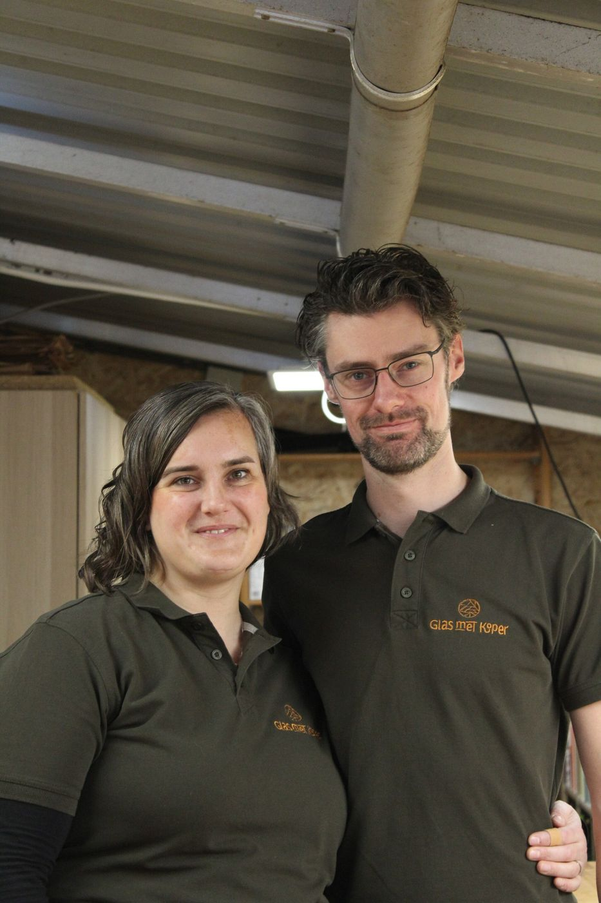
"Het moment waarop je een voltooid werk voor het eerst tegen het licht houdt, blijft altijd magisch."Ella & Kasper
Glas met Koper is het atelier van Ella Koper en Kasper Bodegom. Het begon met een hobbycursus glas in lood, en het glas zelf, met zijn kleuren en licht, liet ons niet meer los. De naam komt van Ella's achternaam: we werken uitsluitend met traditioneel lood.
Sinds november 2025 hebben we ons eigen atelier naast het huis aan de Vijfhuizenweg, ingericht voor glas in lood én glasfusing.
Een raam op maat, een paneel dat hersteld moet worden of een workshop boeken? Bel, app of stuur een bericht.
Je kunt ons allebei direct bereiken.